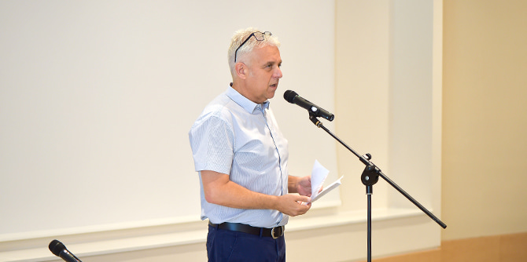
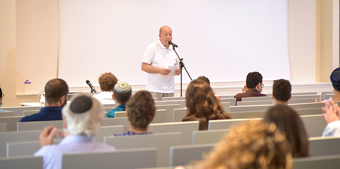
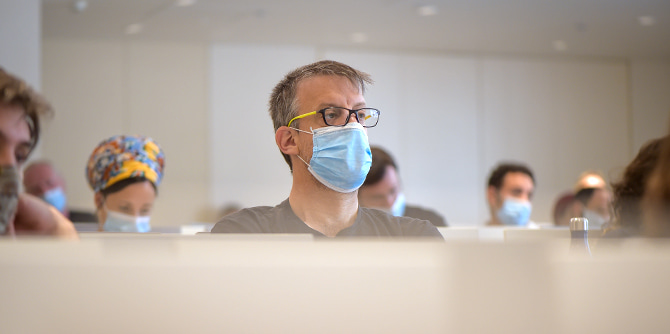

"אנו בפתחה של שנה מאתגרת מאוד – ההתאקלמות בבניין החדש, והחיים לצד ועם הקורונה", אמר
דני בר גיורא, מנהל בית ספר מנדל למנהיגות חינוכית, בדברי הברכה שלו לעמיתים החדשים והוותיקים. "מכל טקסי ורגעי הפתיחה והחנוכה של הבית הזה, היום הוא הרגע המרגש והחשוב מכולם – הרגע שבו מתחילה לפעום כאן הרוח, הרגע שבו מתחילה כאן הלמידה, הרגע שהדבר שלשמו קיים הבניין הזה, מתחיל להתרחש בין כתליו... ואני מאחל לכולנו שבתוך שנה כל כך לא ברורה ולא יציבה, עם המון חוסר שקט ואי-ודאות, שהמקום הזה, בית ספר מנדל למנהיגות חינוכית, יהווה לכולנו עוגן של יציבות, ביטחון, משמעות ושמחה... אנחנו לא שוכחים לרגע שהמטרה של כולנו היא להשפיע ולעשות את החברה הישראלית לטובה יותר, וזאת על-ידי שיפור ותרומה לעולם החינוך".

"זו השנה הראשונה שאנו פותחים שנה בלי שאוכל להגיד שאני מברך אתכם בשם מורט מנדל, שהלך לעולמו באוקטובר שעבר, ואנו מרגישים בחסרונו יום יום", אמר מנכ"ל קרן מנדל-ישראל
משה ויגדור, "אבל אני רוצה לברך אתכם בשם נשיא הקרן, פרופסור יהודה ריינהרץ, ויו"ר הקרן סטיבן הופמן".

את הרצאת הפתיחה של השנה נשא
פרופ' מאיר בוזגלו – פרופ' לפילוסופיה, הוגה, חוקר ופעיל ציבור. בוזגלו פרס את משנתו בדבר התנאים הנחוצים למנהיגות רעיונית, תוך התייחסות גם לרוח הזמן.

לבית ספר מנדל למנהיגות חינוכית מתקבלים מדי שנה כעשרים עמיתים ועמיתות בעלי יכולת עשייה מוכחת, כישורים אינטלקטואליים גבוהים ומחויבות להוביל שינוי למען שיפור המציאות החינוכית והחברתית בישראל. הלימודים בבית הספר, מיזם משותף לקרן מנדל ולמשרד החינוך, נמשכים שנתיים ובמהלכם העמיתים מפתחים את חזונם האישי והמקצועי תוך העמקה והרחבה של הידע המקצועי שלהם ותרגומו לתוכנית פעולה בת-קיימא לתרומה בשדה החינוך והחברה בישראל.

{kind=link}
{kind=link}
{kind=link}
{kind=link}